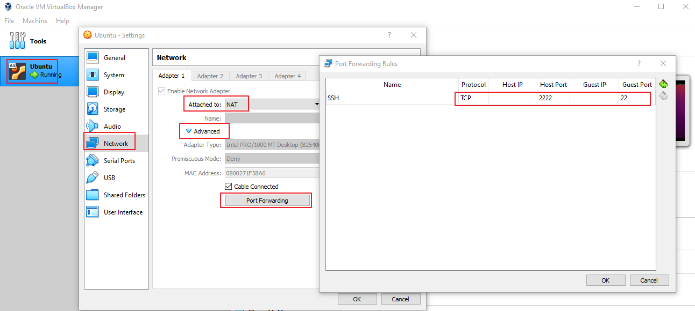

How to SSH to Ubuntu in VirtualBox
Assuming that you are using Ubuntu guest in your VirtualBox, and you are using NAT as the network mode.
Step 1, install and configure openssh-server:
sudo apt install openssh-server
Step 2, setup port fowarding in VirtualBox In VirtualBox
Right click your Virtual Machine (eg. Ubuntu), go to Network -> Advanced -> Port forwarding, add a new entry like below:
| Name | Protocol | Host IP | Host Port | Guest IP | Guest Port |
| SSH | TCP | 2222 | 22 |

Step 3, SSH to Ubuntu in your Host OS
# Change <username> to your Ubuntu login name# and input password when it promptsssh -l <username> 127.0.0.1 -p 2222